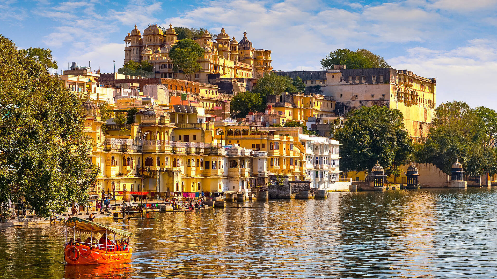
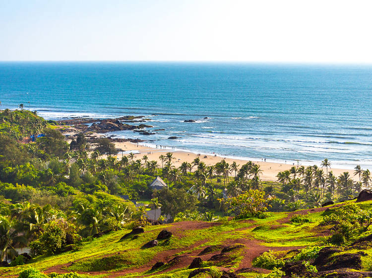

Pichola lake in Udaipur
One of the oldest and the biggest lakes in Udaipur, Pichola lake is world famous for its picturesque beauty and scenic surrounding.

Alleppey
India's Own Venice, the picturesque town of Alleppey, is known for the unique natural spectacle of backwaters.

Destiny of Visakhapatnam
the city is one of the oldest port establishments in the heart of Andhra Pradesh. Known for its serene landscapes.